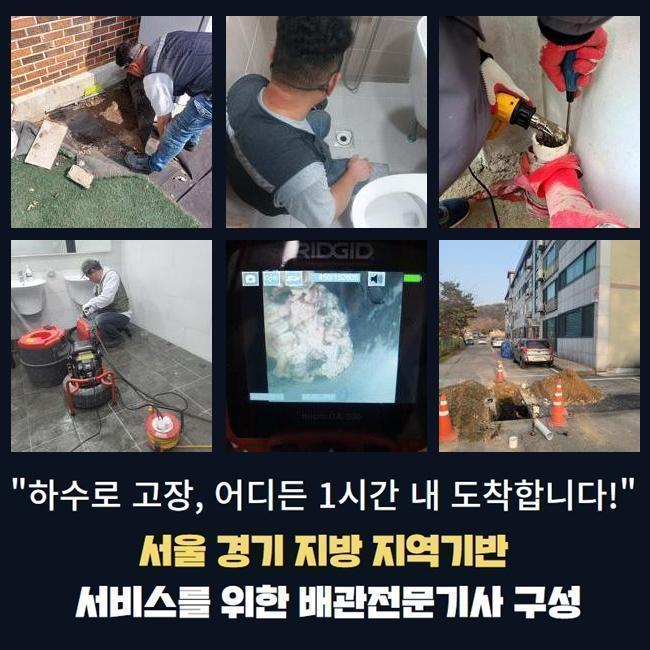
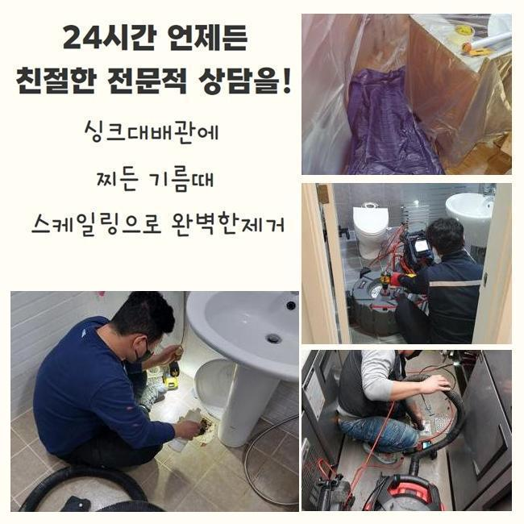
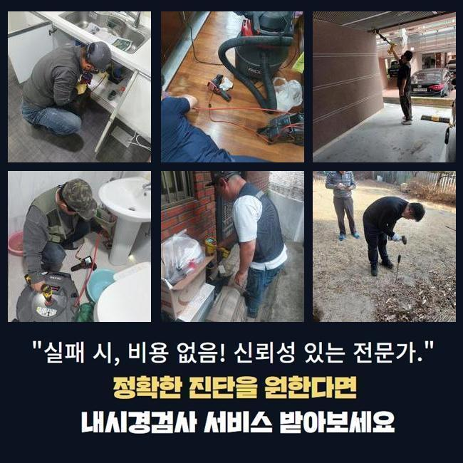
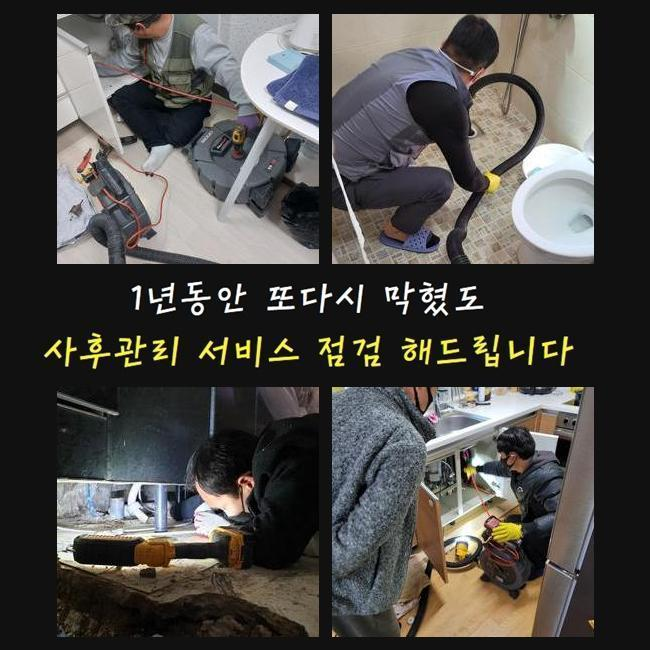
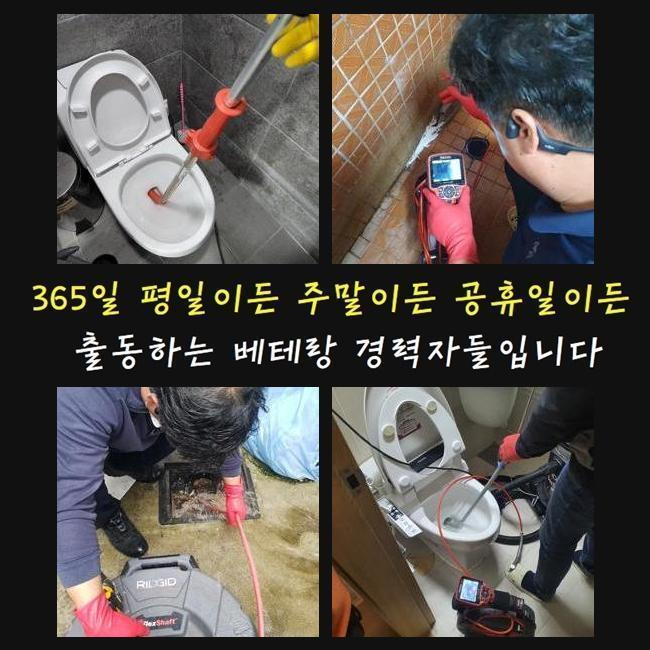

🏠 안양 달안동화장실뚫음 호계동 배수구뚫기 배관설비공사
안양 호계동 배관막힘 전문 시공 후기

📋 작업 개요
- 위치: 안양 호계동, 호계동, 안양
- 서비스 유형: 배관막힘, 누수수리, 역류해결, 뚫는업체, 배관청소, 설비공사
- 작업 일시: 2025. 1. 25. 3:00
- 업체명: 하수구수사대 (010-5615-2118)
🔍 문제 상황
안양 달안동화장실뚫음 호계동 배수구뚫기 배관설비공사
오전에 고객님께 긴급한 방문 요청을 전달 받아서 목적지에 방문했어요
고객분께서 급하게 도움을 요청하셨고 저희 업체는 빨리 필요한 기계를 싣고서 현장으로 달려갔습니다
배수관이 막혀버리면 생활 속에서 크고 작은 불편함이 생겨나기 때문에 막힘사고를 최대한 빨리 처리하는게 제일 중요하죠
긴급하게 주소지로 향하여 우선 막힌부위를 확인해봤어요
배수구 역류현상은 세탁실쪽에서 발생했는데 비정상으로 오수가 흘러가지 못했고 역류하고있는 상황이였어요
고객분께서는 하수라인이 반복적으로 막히는 상황을 해결하기 위해 이런 저런 방법들을 해봤지만 점점 문제가 심각해져서 세탁기가 고장나는 지경까지 와버렸다고 이야기 해주셨어요
일반 가정에서 배수구가 막힌 것을 해결해보자 어렵지 않게 구매할 수 있는 많은 약품등을 이용해보지만 근본이 되는 정확한 이유를 찾아서 처리할 수 없습니다

🔎 원인 분석
💡 전문가 진단: 정밀 진단 장비를 사용하여 슬러지의 고착 여부를 판명하고 타격/세척 작업을 실시했습니다.
하수설비는 오래될수록 불순물이 축적되며 막힘사고가 일어나므로 명확한 이유를 찾고 작업을 진행해야 합니다
우선 배수구 안쪽과 바깥쪽 하수관 확인을 했어요
배수관이 막히는 원인들을 자세히 알아보려면 안쪽만 볼게 아니라 외부까지 전체적으로 점검해보는게 중요해요
하수라인은 가정 내부에서 사용하신 오수를 바깥쪽 하수관으로 배출시키는 구조로 되어있어서 막힘을 일으키고 있는 구심점이 안쪽의 배수관에 있는 것인지 외부의 하수관에 생긴건지 파악해야해요
전체적으로 확인해보니 밖으로 난 하수관에 이물질들이 가득 쌓여 하수가 원활하게 배출되지 않았어요
이와같은 배수구 막힘문제를 처리하기 위해서는 내외부 배수관을 한큐에 작업합니다
우선 내시경기기를 이용해서 배수라인 내부의 상황을 세밀하게 관찰합니다
내시경기로 배수관 안에 가득한 침전물이 하수관을 꽉 막고있는 것을 발견했어요

🔧 작업 과정
샤프트기를 사용해서 하수라인에 쌓여있는 침전물을 해결하는 작업에 들어갔습니다
샤프트기계는 회전하는 힘을 이용해서 침전물을 신속정확하게 제거하는 기기로 하수라인에 달라붙어 있는 굳어버린 침전물을 분쇄하여 처리하는데 적합해요
샤프트기기는 배수라인 안쪽의 불순물을 분쇄하여 배관 속을 깔끔하게 청소해요
배수라인의 막힘 정도가 심각한 상태라서 저희들이 계속적으로 배수관 안쪽에 쌓여있던 침전물을 완벽하게 처리했습니다
생각없이 흘려보내는 작은 이물질들은 시간이 지날수록 하수관에 적재되며 오수가 빠져나가는 길목을 막아버리므로 이처럼 이물질들이 안쌓이게끔 미리 예방하는 것이 좋아요
내부쪽 배수구에서 작업한 침전물이 배수라인을 타고 내려가지 못하게 걸러서 버리는 작업과정까지 끝내고 하수관을 다시 확인합니다
이번엔 단단한 기름슬러지 등의 불순물이 하수라인을 막고 역류를 발생시키고 있었는데 시공작업을 완료 하고나서 내시경장비를 사용해서 하수관 내벽이 완벽하게 해결이 된 상황을 볼 수 있었습니다
모든 작업을 끝내고 물을 가득 채워 흘려보내며 물이 잘 안내려가는 등의 문제들이 있지는 않은지 통수 검사를 했습니다
하수시설의 별다른 이상없이 아주 잘흘러가는 모습까지 확인하고 최종작업을 마무리를 할 수 있었습니다
고객분께서는 모니터 작업부터 오류들이 처리되는 상황을 작업과정을 시작하면서부터 저희들과 같이하시며 전과정을 직접 보셨어요
저희 업체는 하수시설의 여러 오류문제를 밤낮을 가리지 않고 처리해드립니다
하수설비에 이상이 발생하면 실생황에 큰 어려움이 일어날 수도 있기때문에 저희 전문가는 그러한 상황을 처리 해드리기 위해서 언제나 준비하고 있어요
오늘과 같은 하수관 막힘문제는 배수적인 문제뿐만 아니고 위생적인 부분에도 영향을 주므로 신속하게 처리하시는게 좋습니다


✅ 작업 완료
혹시 밑에층에도 피해를 주게 되었다면 우리집과 관계성이 있는 누수의 문제인지 알아봐야하므로 전문진에게 점검을 의뢰하여 정확하게 상황을 판단하시길 바랍니다
저희들은 효과적이고 빠른 출동으로 고객분께서 안심하실 수 있도록 최선을 다하겠습니다
하수관 문제로 전문가의 도움이 필요하신 경우엔 저희 전문가에게 전화 해주시면 친절하게 응대하겠습니다
배수구와 관련된 다양한 문제들은 저희 전문 기술진에게 맡겨주시기 바랍니다


⚠️ 베란다 누수 및 방수 관리 방법
- ✅ 비가 많이 올 때 창틀 주변이나 아래층 천장에 얼룩이 생기는지 정기적으로 확인해 보세요.
- ✅ 우수관 주변 실리콘 마감이 들뜨거나 깨진 틈새가 있는지 손상 여부를 수시로 체크하세요.
- ✅ 베란다 바닥 타일의 줄눈(메지)이 소실되면 그 틈으로 물이 침투하여 누수가 유발됩니다.
- ✅ 누수 의심 증상 발견 시 방치하면 아래층 손실이 커지므로 즉시 전문가의 진단을 받으십시오.
💡 핵심 정리
- 확실한 장비 작업(내시경 점검 및 샤프트 스케일링)으로 원인을 뿌리 뽑습니다.
- 작업 후 1년 이내에 동일한 부위 재발 시 100% 무상 A/S 서비스를 보장합니다.
- 서울 · 경기 · 인천 전 지역에 24시간 언제든 긴급 출동할 수 있도록 항시 대기 중입니다.
❓ 자주 묻는 질문 (FAQ)
🚨 안양 호계동 배관막힘 문제로 고민이신가요?
정확한 원인 진단과 확실한 시공으로 재발 없는 해결을 약속드립니다.
24시간 긴급 출동 | 서울 · 경기 · 인천 전지역 | 1년 내 재발 시 무상 A/S